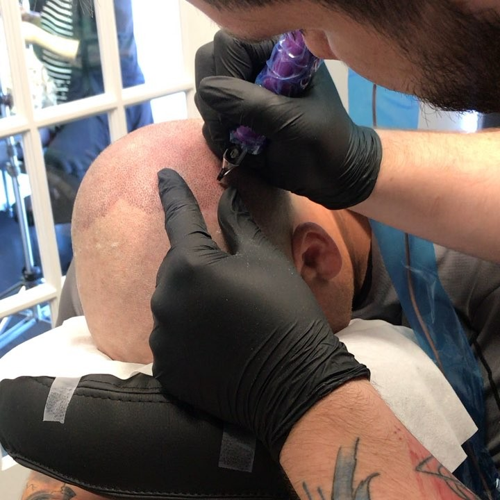

What is SMP?
Scalp micropigmentation (SMP) is a revolutionary cosmetic technique that is non-invasive. It doesn’t require any surgery and is very similar to the process of getting a tattoo. SMP is a hair simulation technique that can give the impression of a full head of shaven hair, add the appearance of hair density, and/or conceal sparse or bald areas. A client seeking SMP services should only go to a qualified and experienced professional to be sure of achieving the safest and best results.
The trained and certified SMP technicians at 2nd Studio use sterile, precision, micro-needles with very fine points to deposit natural pigments into the epidermal layer of the scalp, replicating the growth pattern of real hair follicles. The scalp pigments used at 2nd Skin Studio are of the highest possible quality to ensure zero irritation, and optimal result. Custom pigment shades are selected and blended for complete alignment with the skin tone of the client for a perfect, undetectable finish. Depending on the client's individual requirements, multiple pigment shades are sometimes used to create a style that best suits the client’s facial structure and skin tone.
An SMP procedure is usually split into 2-3 sessions of 2-4 hours each. In the hands of an expert professional, the discomfort is minimal, averaging about a 3 on a scale of 1 (no pain) to 10 (very painful). Topical anesthetics may be used to lessen any discomfort. Super fine needle points and the skill of the tattooist work in tandem to allow only superficial penetration wounds which heal almost immediately.
The most realistic scalp micropigmentation hairlines are indistinguishable from a natural buzz cut or razor shaved look, since the SMP artist follows the follicle density and pattern of the client’s remaining hair.
What are the advantages of SMP?
- SMP is SAFE! In fact, the needle penetration is shallower than an ordinary tattoo and the scalp starts healing almost immediately. At 2nd Skin Studio, organic pigments are used, meaning that adverse reactions are virtually non-existent.
- Unlike the artificial appearance of a hair system or wig, scalp micropigmentation is almost indistinguishable from real hair The tiny needle points deposit just the right amount of pigment in the right shape to mimic the density and pattern of genuine hair follicles.
- SMP allows clients to choose a flattering hairline, accentuating the facial structure and rendering the clients overall appearance a lot more striking or natural (depending on client preference).
- SMP is cost effective and doesn't require regularly recurring expenses.
- The level of discomfort is extremely mild. Topical anaesthetics can be applied to the scalp if necessary, and the consumption of a mild anti-inflammatory tablet like ibuprofen can take care of any residual tenderness after the procedure.